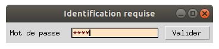
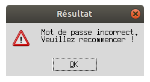

Ligne de saisie
Il s'agit dans cet exemple d'améliorer l'interaction avec l'utilisateur en prroposant un champ de saisie de texte. Nous aurons ainsi un équivalent de la commande input en mode non graphique.
Le programme proposé dans cet exemple va simuler un formulaire de saisie de mot de passe : 
Ce sera aussi l'occasion de découvrir les boîtes de dialogue qui sont des fenêtres toute faites pour un usage précis. Ici, nous afficherons un messsage en cas de mot de passe incorrect : 
Mais tout de suite, regardons le programme. Je vous laisse analyser le code pour trouver le mot de passe !
import tkinter as tk
import tkinter.messagebox as msgb # boîte de dialogue
def verification():
if mot_de_passe.get() == 'python':
# le mot de passe est bon :
# on affiche une boîte de dialogue puis on ferme la fenêtre
msgb.showinfo('Résultat','Mot de passe correct.\nAu revoir !')
mon_app.destroy()
else:
# le mot de passe est incorrect : on affiche une boîte de dialogue
msgb.showwarning('Résultat','Mot de passe incorrect.\nVeuillez recommencer !')
mot_de_passe.set('')
# Création de la fenêtre principale (main window)
mon_app = tk.Tk()
mon_app.title('Identification requise')
# Création d'un widget Label (texte 'Mot de passe')
texte1 = tk.Label(mon_app, text='Mot de passe ')
texte1.grid(row=0, column=0)
# Création d'un widget Entry (champ de saisie)
mot_de_passe = tk.StringVar()
ligne_saisie = tk.Entry(mon_app, textvariable=mot_de_passe, show='*', bg='bisque', fg='maroon')
ligne_saisie.focus_set()
ligne_saisie.grid(row=0, column=1)
# Création d'un widget Button (bouton Valider)
tk.Button(mon_app, text='Valider', command=verification).grid(row=0, column=2)
mon_app.mainloop()
Fonctionnement du champ de saisie texte
Le champ de saisie du mot de passe se déclare au moyen de la commande suivante :
ligne_saisie = tk.Entry(mon_app, textvariable=mot_de_passe, show='*', bg='bisque', fg='maroon')
La réponse viendra se positionner dans la variable mot_de_passe qui est un objet StringVar() comme on peut s'en douter à présent (c'est en effet un texte qui sera modifié par l'utilisateur).
Une petite subtilité dans cet exemple est le paramètre show='*' :
Celui-ci permet d'afficher des "*" au lieu du mot de passe en clair.
La ligne suivante mérite aussi une petite explication :
ligne_saisie.focus_set()
Celle-ci permet en effet de positionner le curseur dans le champ de saisie afin qu'il n'y ait pas besoin de cliquer dedans avant de commencer à écrire.
La récupération de la saisie de l'utilisateur se fait au moyen de l'appel à la méthode : mot_de_passe.get()
Explication sur les dialogues
Une fenêtre s'affiche avec un message et un bouton OK une fois le mot de passe saisi. Cette fenêtre est en quelque sorte préfabriquée. C'est ce qu'on appelle un dialogue.
Tkinter possède beaucoup de dialogues prédéfinis :
- pour afficher des messages d'alerte
- pour sélectionner des couleurs
- pour sélectionner des fichiers dans le disque dur
- etc...
Pour utiliser cette foncitonnalité de dialogue d'alerte, nous commencerons par importer la librarie idoine :
import tkinter.messagebox as msgb
Ensuite, l'affichage d'un message se fait par la simple commande :
msgb.showinfo('Résultat','Mot de passe correct.\nAu revoir !')
Cela affiche la fenêtre avec le label et le bouton avec une commande aussi simple qu'un print. magique ! Remarquez au passage le caractère \n permettant de passer à la ligne dans le message.
La commande
msgb.showwarning('Résultat','Mot de passe incorrect.\nVeuillez recommencer !')
est d'usage similaire. Elle affiche un panneau d'avertissement en plus.